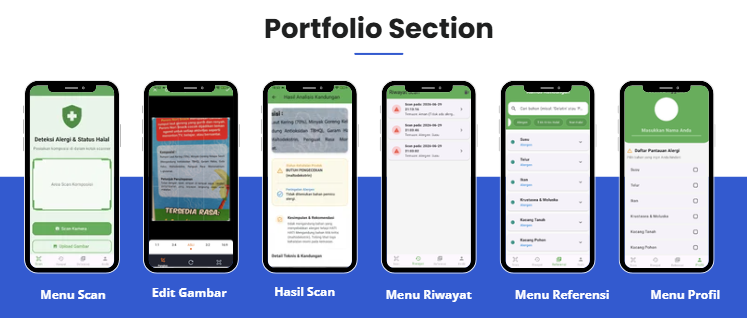

📱 Halalergy: AI-Powered Food Label Analysis App
Android-Based Allergen & Halal Identification System (Undergraduate Thesis)

Overview
Engineered an end-to-end AI-powered Android application that extracts ingredient lists from packaged food photos using Tesseract OCR (LSTM), processes text via NLP & RapidFuzz (Threshold ≥80), and matches terms against a structured Knowledge Base in real time via a Flask REST API.
🎯 Problem Statement & Objective
- Challenge: Food packaging ingredients are often lengthy, use complex chemical nomenclature, and exist only as physical printed text, making quick identification of allergens and halal status difficult.
- Solution: Developed an automated processing pipeline spanning image capture, OCR extraction, NLP normalization, and fuzzy ingredient matching delivered through an intuitive Flutter mobile application.
📊 Key Technical Performance & Metrics
| Metrics | Results / Specifications |
|---|---|
| OCR Evaluation Dataset | 50 Real-World Food Packaging Images |
| Peak OCR Accuracy | 94.18% (Tesseract LSTM Engine) |
| Fuzzy Matching Threshold | ≥80% Similarity (RapidFuzz extractOne) |
| System Architecture | RESTful API (Flask Backend + Flutter Mobile) |
💡 Key Technical Insights (System Value)
- Hybrid Pipeline Strategy: Raw OCR alone is insufficient for imperfect label photos. Combining OCR → NLP Preprocessing (Cleaning/Tokenization) → RapidFuzz successfully mitigates extraction noise and minor spelling variations.
- Preprocessing Optimization: Introducing client-side Crop & Rotate features significantly improved initial image quality prior to OCR execution, directly enhancing text extraction precision.
- Scalable Knowledge Base: Decoupling the ingredient matching engine from the allergen/halal metadata schema allows seamless updates to the knowledge graph without modifying backend logic.
⚙️️ System Architecture & Workflow
1
Flutter Android App
Image Capture & Crop
➔
2
Flask REST API
Tesseract OCR (LSTM)
➔
3
NLP & RapidFuzz
Fuzzy Matching (≥80%)
➔
4
Knowledge Base
Render Result & History
🛠️ Tech Stack & Skills Highlighted
AI & NLP Pipeline:
Backend & API:
Mobile Development:
Core Capabilities: